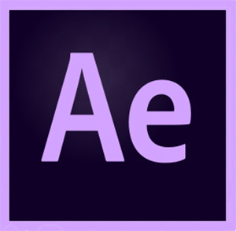
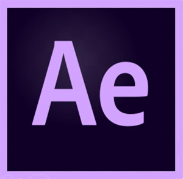

WEBSITES
Why i created this site?
The project was created to use all the skills acquired through independent learning. Moreover, I needed a place where I could keep all my work (places where my progress would be visible).
Used tools
 

More pages?
In the future, you will see more webpages created by me. At the moment I can share the design of the restaurant website in Augustów. It was the first page that I created, to prove myself in this area, unfortunately, due to certain circumstances, the project was not implemented. Nevertheless, I am proud of the design. Yes, I am not afraid of failures, they are only a way to success.